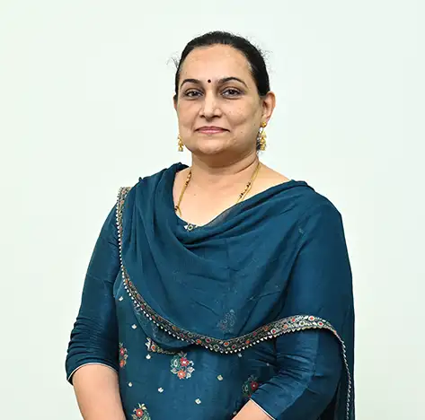

Dr. Apurva Abhijit Naik
Research and Ph.D. Coordinator School of Engineering and Technology, Associate Professor and Ph.D. Coordinator

Research and Ph.D. Coordinator School of Engineering and Technology, Associate Professor and Ph.D. Coordinator
Dr. Apurva Naik is an accomplished Associate Professor at the School of Electronics and Communication, MIT World Peace University in Kothrud, Pune, India. With her expertise in Computer Vision, Embedded Systems and IoT, Cubesat Development, and Biomedical Engineering, she has made remarkable contributions to her field. Dr. Naik has an impressive track record of research, with 29 published research papers in renowned international conferences and journals such as IEEE, IARIA, and Elsevier, along with three book chapters to her credit. She has also been granted an Indian patent for her innovative work. Dr. Naik's dedication and hard work have earned her recognition in the form of two best paper awards at international conferences. She has also served as a session chair at various international conferences, showcasing her proficiency in the field. Overall, Dr. Apurva Naik is a respected academician who has made a significant contribution to her field and continues to inspire her students and colleagues to strive for excellence.
Embedded Systems, Biomedical Engineering Embedded Systems, IoT
Profiles